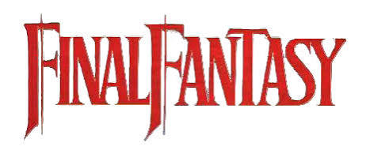
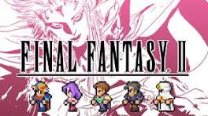
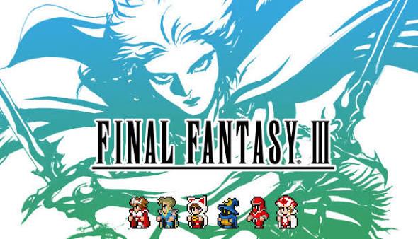

Juegos de la franquicia
Proyectos
En esta página seleccioné algunos títulos clásicos para mostrar diferencias entre sus propuestas y mecánicas.
Algunos títulos para conocer

Final Fantasy
El primer juego de la serie presenta un grupo de Guerreros de la Luz que debe restaurar el equilibrio de los cristales.

Final Fantasy II
Esta entrega sigue a un grupo de jóvenes que se enfrenta al Imperio. Su progresión permite mejorar atributos usando las acciones durante los combates.

Final Fantasy III
Uno de sus elementos más conocidos es el sistema de trabajos, que permite cambiar el rol de los personajes según las necesidades del equipo.